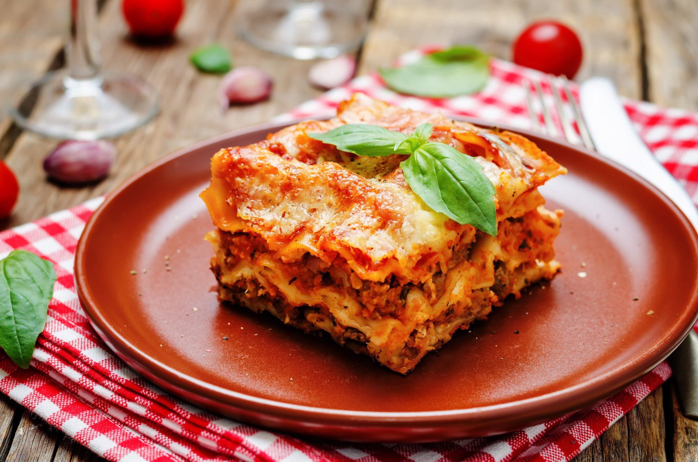

Lasagne

Description
Lasagne is a classic Italian dish made with layers of pasta sheets, rich
meat or vegetable sauce, creamy béchamel, and melted cheese, all baked to
perfection. It's hearty, flavorful, and a popular comfort food around the
world.
Ingredients
- Ground beef or pork (or a mix)
- Onion (finely chopped)
- Garlic (minced)
- Carrot (finely chopped)
- Celery (finely chopped)
- Canned tomatoes or tomato sauce
- Tomato paste (optional)
- Olive oil
- Salt and pepper
- Italian herbs (like basil, oregano, thyme)
- Red wine (optional)
- Butter
- All-purpose flour
- Milk
- Nutmeg (a pinch)
- Salt and pepper
Steps
- Preheat your oven to 375°F (190°C).
-
Heat olive oil in a pan and sauté onions, garlic, carrots, and celery
until soft.
- Add ground beef or pork and cook until browned.
-
Stir in canned tomatoes, tomato paste, herbs, salt, pepper, and red wine
(if using). Simmer for 20–30 minutes.
- In a separate saucepan, melt butter for the béchamel sauce.
- Whisk in flour and cook for 1–2 minutes to form a roux.
-
Gradually add milk, whisking constantly until the sauce thickens. Season
with salt, pepper, and a pinch of nutmeg.
- Spread a layer of meat sauce on the bottom of a baking dish.
- Add a layer of lasagne sheets over the sauce.
-
Spread a layer of béchamel sauce over the pasta, then sprinkle with
cheese (optional).
-
Repeat layers (meat sauce, pasta, béchamel, cheese) until all
ingredients are used, finishing with béchamel and cheese on top.
- Cover with foil and bake for 25–30 minutes.
-
Remove foil and bake for an additional 10–15 minutes until the top is
golden and bubbling.
- Let lasagne rest for 10–15 minutes before serving.
Home